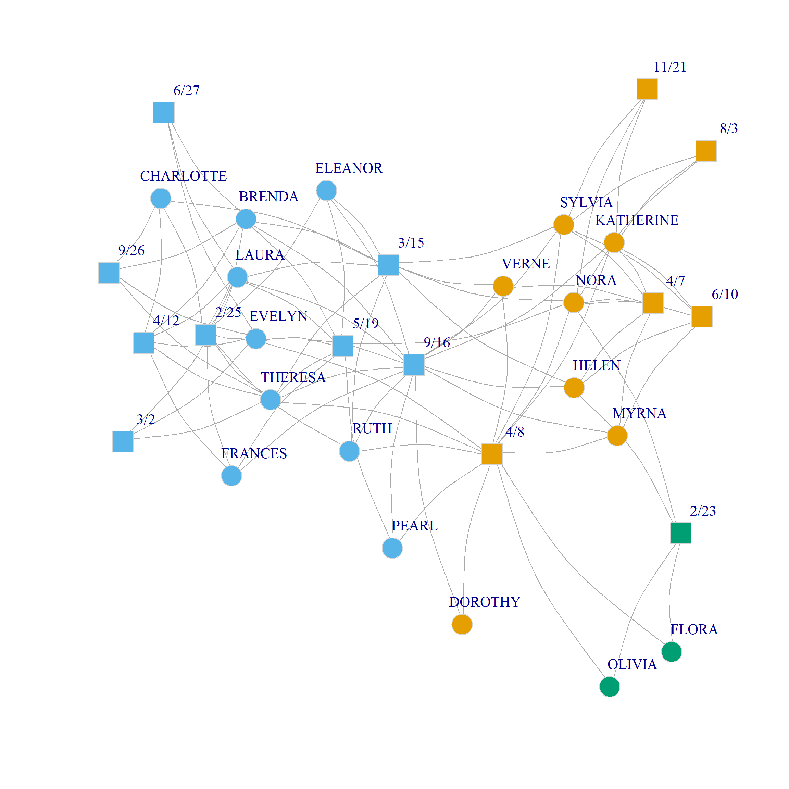
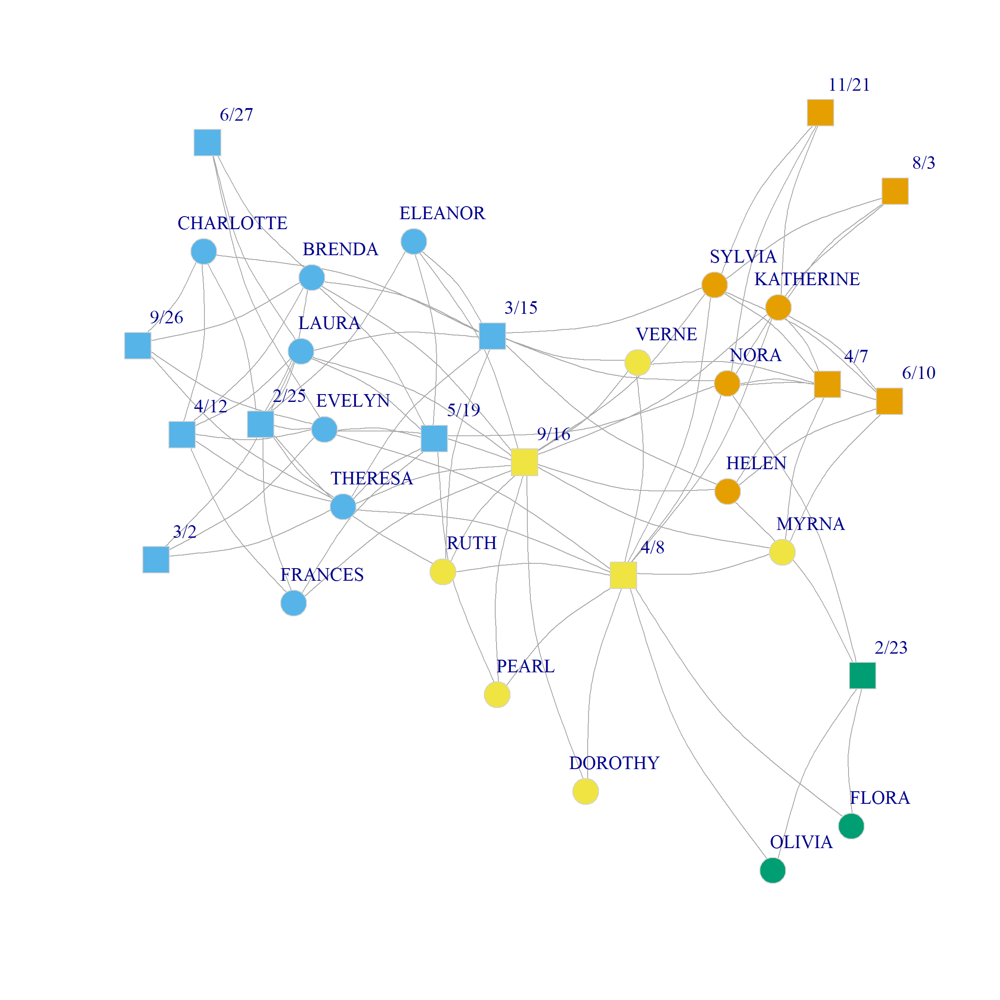
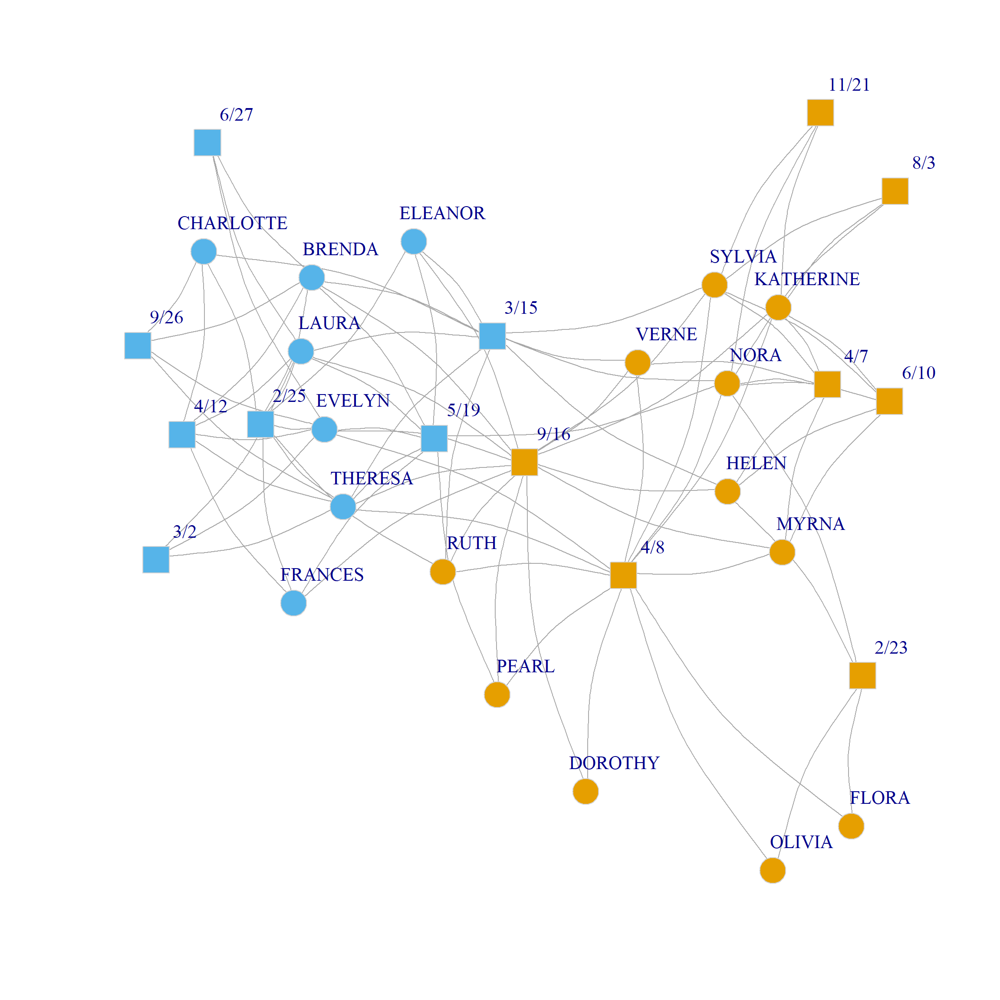
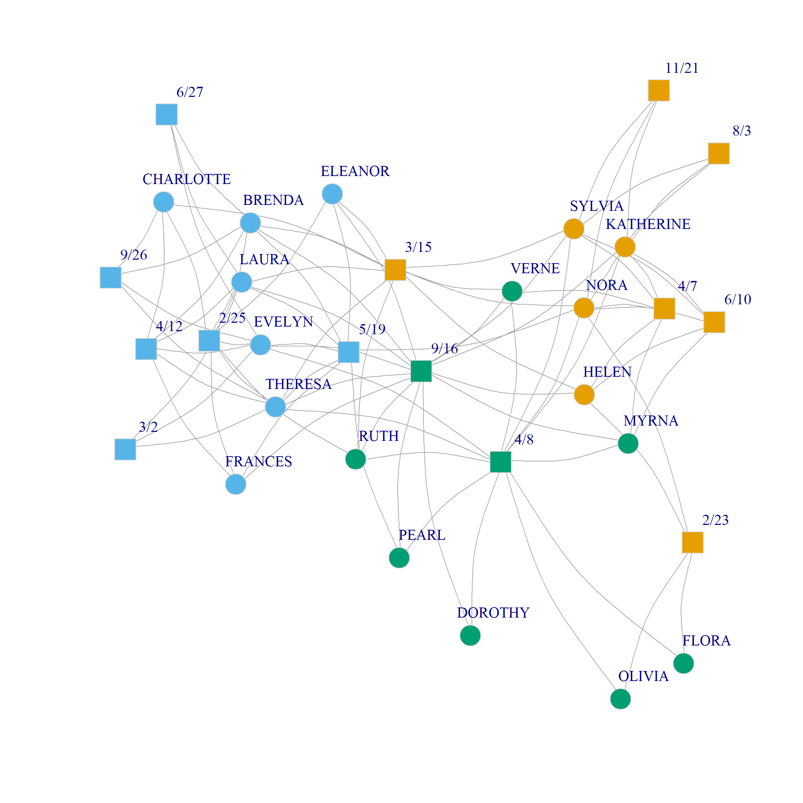
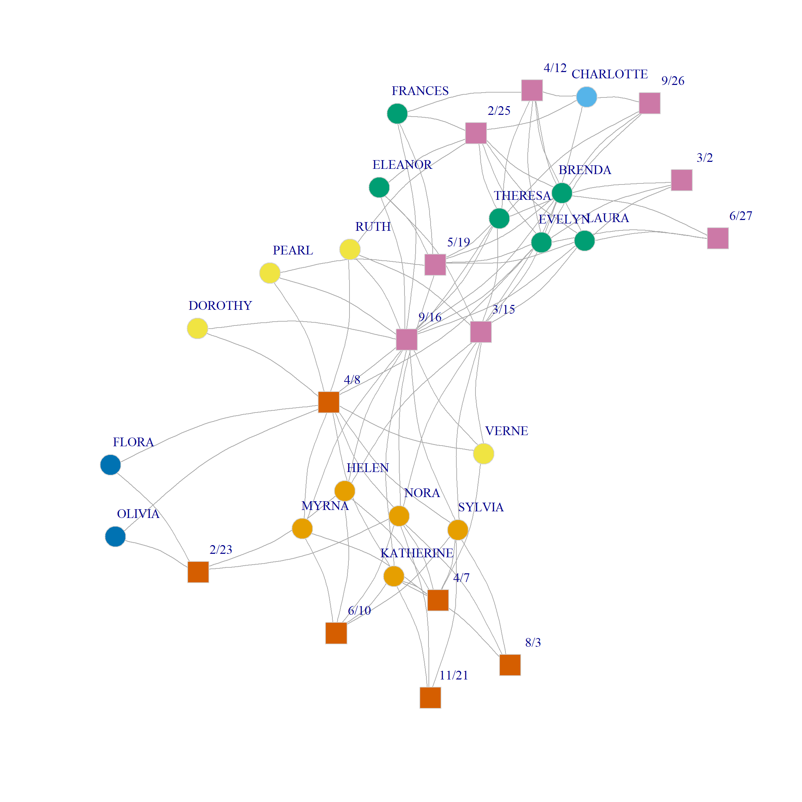

Community Detection Using Spectral Clustering
Spectral Clustering
In the handout on communities, we saw how to use the leading (first) eigenvector of the modularity matrix to split a network in two (and then split those partitions in two and so on).
In the handout on CA, we saw that the eigendecomposition of a square matrix actually results in \(p\) eigenvectors and eigenvalues (not just the leading or first).
We also learned from the eigendecomposition lesson that selecting some number \(k < p\) of eigenvectors and eigenvalues helps us reconstruct the best approximation of the original matrix given that number of dimensions.
Putting these three lessons together suggests a simple way to detect multiple communities in a network using the eigenvalues of a suitable matrix, along with standard clustering algorithms such as k-means clustering. This approach does not have to iterate between binary divisions based on a single (leading) eigenvector, but can instead use multiple eigenvectors at once to partition the data into any desired number of clusters.
This general approach to community detection is sometimes referred to as spectral clustering.1
Spectral Clustering Using the Eigenvectors of the Laplacian
The issue then becomes, which matrix should we use the eigenvalues and eigenvectors of? As suggested by Von Luxburg (2007), an obvious candidate is what is called the graph Laplacian (\(\mathbf{L}\)), which is given by:
\[ \mathbf{L} = \mathbf{D} - \mathbf{A} \]
Where \(\mathbf{D}\) is the graph’s degree matrix a matrix with the degree vector of the graph along the diagonals and zeros everywhere else.
Like the modularity matrix, the \(\mathbf{L}\) matrix is doubly-centered (rows and columns sum to zero), which means, via some math other smarter people have worked out, that, if \(\mathbf{A}\) is connected, one of the eigenvalues of \(\mathbf{L}\) is guaranteed to be zero.2
The other interesting thing is that the second smallest (non-zero) eigenvalue of \(\mathbf{L}\) (sometimes called the Fiedler vector) provides an optimal (e.g., minimizing the number of cross-community edges) two-community partition of the graph (just like we saw the leading eigenvector of the modularity matrix does).
If we want to check for the existence of multiple groups, therefore, what we need to do is to create a new \(n \times k\) matrix \(\mathbf{U}\) composed of the \(k\) eigenvectors of \(\mathbf{L}\) associated with the \(k\) smallest eigenvalues, arranged from smallest to biggest.
We then normalize the node-specific row-vector of values of the\(\mathbf{U}\) matrix (e.g., using the Euclidean norm), and the use normalized \(\mathbf{U}\) matrix, which is an embedding of the node set of the graph in an k-dimensional Euclidean space, as input to a k-means algorithm with a known number of clusters (Fouss, Saerens, and Shimbo 2016, 320).
Let’s see how that would work. Let’s load the law_friends data from the networkdata package containing information on the friendship nominations of 68 lawyers in a firm. We have already analyzed these data using other community detection algorithms in a previous handout. The original data are directed, so we constrain them to be undirected and remove nodes with degree less than two:
We can then write a function called ratio.cut that accomplishes the eigendecomposition of the graph Laplacian matrix described earlier. It looks like this:
ratio.cut <- function(x, k = 6) {
A <- as.matrix(as_adjacency_matrix(x))
D <- diag(degree(x))
n <- vcount(x)
L <- D - A
eig.L <- eigen(L)
b <- n - k
e <- n - 1
U <- matrix(eig.L$vectors[, b:e], nrow = n, ncol = k)
if (k > 1) {
U <- U[, k:1] #re-ordering columns from smallest to biggest
}
for (i in 1:nrow(U)) {
U[i, ] <- U[i, ]/norm(as.matrix(U[i, ]), type = "E")
}
return(U)
}This function takes a graph as input and produces the \(\mathbf{U}\) matrix with \(n\) rows and \(k\) columns, with \(k=6\) by default. It first computes the adjacency matrix (line 2), then the degree matrix (line 3), then the Laplacian matrix (line 5). It then computes the eigendecomposition of the Laplacian (line 6), row normalizes the values taken by the eigenvectors corresponding to the \(k\) smallest eigenvalues in lines 10-13 (reverse-ordered from smallest to biggest in line 9), and returns the resulting matrix \(\mathbf{U}\) in line 14.
Let’s see the function at work:
[,1] [,2] [,3] [,4] [,5] [,6]
[1,] 0.08 0.34 0.66 0.37 -0.54 0.13
[2,] 0.07 0.29 0.60 0.37 -0.53 0.37
[3,] 0.47 0.13 0.08 -0.87 0.03 0.04
[4,] 0.34 0.38 0.71 0.16 -0.45 0.10
[5,] 0.57 0.26 0.06 -0.78 0.00 0.01
[6,] 0.58 -0.76 -0.21 0.20 -0.05 0.03
[7,] 0.37 0.20 -0.01 -0.90 0.08 0.03
[8,] -0.02 0.33 0.65 0.41 -0.55 -0.01
[9,] 0.14 0.37 0.67 0.36 -0.52 0.04
[10,] 0.05 0.36 0.66 0.42 -0.50 0.06Which shows the corresponding values of \(\mathbf{U}\) for each node across the six eigenvectors of the Laplacian we selected.
Now, the basic idea is to treat each of the normalized scores along the six eigenvectors as if they were “variables” or “features” in a standard k-means clustering problem. The algorithm will then group nodes based on how similar their scores are on each six-dimensional vector. Similar nodes will correspond to communities (k-means clusters) in our data.
K-means clustering requires knowing how many groups we want in advance (differently from hierarchical clustering). Since we don’t know which is the best community partition beforehand, we instead compute a bunch of partitions and check the modularity of each.
The following function computes cluster assignments of the nodes in the graph up to ten partitions (starting from the minimum two):
This function takes the \(\mathbf{U}\) matrix as input and returns a nine-element list (with vectors of length \(n\) as its elements) of cluster assignments for each node in the graph, corresponding to partitions \(k = \{2, 3, \ldots 10\}\) respectively.
Let’s see the clustering function at work:
[[1]]
[1] 2 2 1 2 1 1 1 2 2 2 2 2 2 1 2 2 2 1 1 2 2 2 2 2 2 2 2 1 2 2 1 1 1 2 1 2 2 2
[39] 2 1 1 2 1 1 2 1 1 1 1 2 1 1 1 1 1 1 1 1 1 1 1 1 1 1 1 1 1 1
[[2]]
[1] 3 3 1 3 1 1 1 3 3 3 3 3 3 1 3 3 3 1 1 3 3 3 3 3 3 3 3 1 3 3 1 1 1 3 1 3 3 3
[39] 3 2 2 3 2 1 3 2 1 1 2 3 2 2 2 2 1 1 1 1 2 1 2 2 2 2 2 2 2 2
[[3]]
[1] 3 3 4 3 4 4 4 3 3 3 3 3 3 4 3 3 3 4 1 3 3 3 3 3 3 3 3 4 3 3 4 4 4 3 1 3 3 3
[39] 3 2 2 3 2 1 3 2 1 1 2 3 2 2 2 1 1 1 1 1 2 4 2 2 2 2 2 2 2 2
[[4]]
[1] 3 3 5 3 5 5 5 3 3 3 3 3 3 5 3 3 3 5 1 3 3 3 3 3 3 3 3 5 3 4 4 4 4 3 1 3 3 3
[39] 3 2 2 3 2 1 3 2 1 1 2 3 2 2 2 1 1 1 1 1 2 4 2 2 2 2 2 2 2 2
[[5]]
[1] 3 3 5 3 5 5 5 3 3 3 3 3 3 5 3 3 3 5 1 3 3 3 3 3 4 3 3 5 3 4 6 6 6 3 1 4 3 3
[39] 3 2 2 3 2 1 3 2 1 1 2 3 2 2 2 1 1 1 1 1 2 6 2 2 2 2 2 2 2 2
[[6]]
[1] 3 3 5 3 5 5 5 3 3 3 3 3 3 5 3 3 3 5 1 3 3 3 3 3 4 3 3 5 3 4 6 6 6 3 1 4 3 3
[39] 3 2 2 3 2 1 3 2 1 1 2 3 2 2 2 1 1 1 1 1 2 6 7 2 7 7 7 7 7 7
[[7]]
[1] 8 8 5 8 5 5 5 8 8 8 8 8 8 5 8 8 8 5 1 8 8 8 8 8 4 8 8 5 8 4 6 6 6 3 1 3 3 3
[39] 3 2 2 3 2 1 3 2 1 1 2 8 2 2 2 1 1 1 1 1 2 6 7 2 7 7 7 7 7 7
[[8]]
[1] 8 8 5 8 5 5 5 8 8 8 8 8 8 5 8 8 8 5 1 8 8 8 8 8 4 8 8 5 8 4 6 6 6 3 1 3 3 3
[39] 3 2 2 3 7 1 3 2 1 1 2 8 2 2 2 7 1 1 1 1 7 6 7 2 9 9 9 9 9 9
[[9]]
[1] 3 3 5 3 5 5 5 3 3 3 3 3 3 5 8 3 3 5 1 3 3 3 3 3 4
[26] 3 3 5 3 4 6 6 6 10 1 10 10 10 10 2 2 10 7 1 10 2 1 1 2 8
[51] 2 2 2 7 1 1 1 1 7 6 7 2 9 9 9 9 9 9Great! Now that we have our partitions, we need to check the modularity corresponding to each one of them.
We can do this with the following quick function:
Which takes an igraph graph object and the list of cluster assignments as input and produces a vector of the same length as the list of cluster assignments with the modularity corresponding to that assignment.
Let’s see this function at work in our running example:
2 3 4 5 6 7 8 9 10
0.305 0.356 0.328 0.319 0.316 0.300 0.302 0.293 0.286 Which suggests that the three-cluster partition of the network (shown in Figure 1 (b)) does pretty well in separating densely connected subgraphs (\(Q = 0.36\)).
Note that this partition looks a lot like the one we settled on using Newman’s divisive leading eigenvector approach based on the modularity matrix: One core dense group of lawyers surrounded by a looser couple of communities.


Note also that the four, five, six and even seven-community partitions are not too shabby either. We can see those in Figure 1 (c)-Figure 1 (f) as they reveal further insights into the group structure of the network beyond the main three-community division.
Note that further subdivisions of the network split the more loosely structured community in the upper-right, while the more densely linked community in the lower-left remains largely undisturbed.
Spectral Clustering Using the Eigenvectors of the Normalized Laplacian
We saw how to cluster a network in a way that results in a good community partition using the Laplacian of the adjacency matrix \(\mathbf{L}\). Another approach is to use a (degree) normalized version of the same matrix \(\mathbf{\hat{L}}\), defined as follows:
\[ \mathbf{\hat{L}} = \mathbf{I} - \mathbf{D}^{-\frac{1}{2}}\mathbf{A}\mathbf{D}^{-\frac{1}{2}} \]
Where everything else is as before and \(\mathbf{I}\) is the identity matrix (an \(n \times n\) matrix with ones along the diagonals and zero everywhere else), and \(\mathbf{D}^{-\frac{1}{2}}\) is a matrix containing the inverse of the square root of degrees of each node (\(1/\sqrt{k_i}\)) in the diagonals and zeros everywhere else.
We can just adapt our previous ratio.cut function code to perform this new job:
norm.ratio.cut <- function(x, k = 6) {
A <- as.matrix(as_adjacency_matrix(x))
n <- vcount(x)
I <- diag(1, n, n)
D <- diag(1/sqrt(degree(x)))
L <- I - (D %*% A %*% D)
eig.L <- eigen(L)
b <- n - k
e <- n - 1
U <- matrix(eig.L$vectors[, b:e], nrow = n, ncol = k)
if (k > 1) {
U <- U[, k:1] #re-ordering columns from smallest to biggest
}
for (i in 1:nrow(U)) {
U[i, ] <- U[i, ]/norm(as.matrix(U[i, ]), type = "E")
}
return(U)
}Where we just have to modify the way we define the \(\mathbf{D}\) and \(\mathbf{L}\) matrices in lines 5 and 6 respectively, after creating the \(\mathbf{I}\) matrix in line 4.
Now let’s see if the normalized cut can help us finds some communities:
2 3 4 5 6 7 8 9 10
0.250 0.316 0.320 0.352 0.350 0.331 0.293 0.284 0.246 

As we can see, the normalized ratio cut approach performs almost as well as the ratio cut approach in terms of the maximum modularity it finds (\(Q = 0.35\)), but suggests a finer grained partition, with the maximum at either five or six communities.
The resulting node clusters are shown in Figure 2 (a) and Figure 2 (b).
Spectral Clustering Using the Eigenvectors of the Degree-Normalized Laplacian
An alternative version of the normalized Laplacian is given by:
\[ \mathbf{\bar{L}} = \mathbf{D}^{-1}\mathbf{L} \]
Which is just the original Laplacian as defined earlier with each entry divided by the degree of the corresponding node in that row.
A function that extracts the relevant eigenvectors of this version of the normalized Laplacian goes as follows:
d.norm.ratio.cut <- function(x, k = 6) {
A <- as.matrix(as_adjacency_matrix(x))
n <- vcount(x)
I <- diag(1, n, n)
D <- diag(degree(x))
L <- solve(D) %*% (D - A)
eig.L <- eigen(L)
b <- n - k
e <- n - 1
U <- matrix(eig.L$vectors[, b:e], nrow = n, ncol = k)
if (k > 1) {
U <- U[, k:1] #re-ordering columns from smallest to biggest
}
for (i in 1:nrow(U)) {
U[i, ] <- U[i, ]/norm(as.matrix(U[i, ]), type = "E")
}
return(U)
}Where, once again, we only need to modify a couple of lines (5 and 6) from before to compute the new version of \(\mathbf{L}\).
To see the quality of the partitions obtained via this method, we just type:
2 3 4 5 6 7 8 9 10
0.250 0.355 0.339 0.327 0.340 0.331 0.294 0.287 0.252 The degree-normalized Laplacian once again prefers the three-community partition, but also shows that the six community partition produces a high-quality clustering. Here’s how those look like:


Clustering Using the Eigenvectors of the Modularity Matrix
As noted by Fender et al. (2017, 1796), we can extend the spectral clustering approach based on the Laplacian and the normalized Laplacian to the modularity matrix \(\mathbf{B}\). That is, we cluster the graph by embedding the nodes in a set of dimensions defined by the eigendecomposition of \(\mathbf{B}\).
The main difference is that rather than using the eigenvectors corresponding to the smallest eigenvalues (as we did with \(\mathbf{L}\)) we proceed in more typical fashion (as done with PCA and CA) and choose the eigenvectors corresponding to the largest ones.
This approach, once again, only requires small modifications to the one we used for the Laplacian:
The key difference here is that we compute the modularity matrix \(\mathbf{B}\) rather than \(\mathbf{L}\) from the adjacency matrix \(\mathbf{A}\) in line 5; we then plug \(\mathbf{B}\) into the eigen function and proceed with normalizing in the same way as before.
Another difference is that rather than using a large number of eigenvalues (e.g., \(k = 6\)), as we did when we were picking from the smallest ones, we now go for parsimony and pick a small rank (two-dimensional) representation of the original modularity matrix (\(k = 2\)).
Let’s see how this works:
2 3 4 5 6 7 8 9 10
0.264 0.366 0.331 0.317 0.306 0.304 0.224 0.187 0.166 We can see that the three-cluster solution does really well modularity-wise (\(Q = 0.37\)), however, the four cluster solution also seems promising. The resulting communities are shown in Figure 3 (a) and Figure 3 (b).


Spectral Clustering of Two-Mode Networks
We can use a variant of the spectral clustering approach to find multiple communities in two-mode networks (Wu, Gu, and Yang 2022). This approach combines Correspondence Analysis (CA)—which we covered in the previous handout—and k-means clustering on multiple dimensions.
So let’s bring back our old friend, the Southern Women data:
Let’s also compute the bi-adjacency modularity matrix:
dp <- as.matrix(rowSums(A))
dg <- as.matrix(colSums(A))
dpdg <- dp %*% t(dg) #person x group degree product matrix
B <- A - dpdg/sum(A)
round(B, 2) 6/27 3/2 4/12 9/26 2/25 5/19 3/15 9/16 4/8 6/10 2/23
EVELYN 0.73 0.73 0.46 0.64 0.28 0.28 -0.90 -0.26 -0.08 -0.45 -0.36
LAURA 0.76 0.76 0.53 -0.31 0.37 0.37 0.21 -0.10 -0.94 -0.39 -0.31
THERESA -0.27 0.73 0.46 0.64 0.28 0.28 0.10 -0.26 -0.08 -0.45 -0.36
BRENDA 0.76 -0.24 0.53 0.69 0.37 0.37 0.21 -0.10 -0.94 -0.39 -0.31
CHARLOTTE -0.13 -0.13 0.73 0.82 0.64 -0.36 0.55 -0.63 -0.54 -0.22 -0.18
FRANCES -0.13 -0.13 0.73 -0.18 0.64 0.64 -0.45 0.37 -0.54 -0.22 -0.18
ELEANOR -0.13 -0.13 -0.27 -0.18 0.64 0.64 0.55 0.37 -0.54 -0.22 -0.18
PEARL -0.10 -0.10 -0.20 -0.13 -0.27 0.73 -0.34 0.53 0.60 -0.17 -0.13
RUTH -0.13 -0.13 -0.27 -0.18 0.64 -0.36 0.55 0.37 0.46 -0.22 -0.18
VERNE -0.13 -0.13 -0.27 -0.18 -0.36 -0.36 0.55 0.37 0.46 -0.22 -0.18
MYRNA -0.13 -0.13 -0.27 -0.18 -0.36 -0.36 -0.45 0.37 0.46 0.78 -0.18
KATHERINE -0.20 -0.20 -0.40 -0.27 -0.54 -0.54 -0.67 0.06 0.19 0.66 -0.27
SYLVIA -0.24 -0.24 -0.47 -0.31 -0.63 -0.63 0.21 -0.10 0.06 0.61 -0.31
NORA -0.27 -0.27 -0.54 -0.36 -0.72 0.28 0.10 -1.26 -0.08 0.55 0.64
HELEN -0.17 -0.17 -0.34 -0.22 -0.45 -0.45 0.44 0.21 -0.67 0.72 0.78
DOROTHY -0.07 -0.07 -0.13 -0.09 -0.18 -0.18 -0.22 0.69 0.73 -0.11 -0.09
OLIVIA -0.07 -0.07 -0.13 -0.09 -0.18 -0.18 -0.22 -0.31 0.73 -0.11 0.91
FLORA -0.07 -0.07 -0.13 -0.09 -0.18 -0.18 -0.22 -0.31 0.73 -0.11 0.91
4/7 11/21 8/3
EVELYN -0.54 -0.27 -0.27
LAURA -0.47 -0.24 -0.24
THERESA -0.54 -0.27 -0.27
BRENDA -0.47 -0.24 -0.24
CHARLOTTE -0.27 -0.13 -0.13
FRANCES -0.27 -0.13 -0.13
ELEANOR -0.27 -0.13 -0.13
PEARL -0.20 -0.10 -0.10
RUTH -0.27 -0.13 -0.13
VERNE 0.73 -0.13 -0.13
MYRNA 0.73 -0.13 -0.13
KATHERINE 0.60 0.80 0.80
SYLVIA 0.53 0.76 0.76
NORA 0.46 0.73 0.73
HELEN 0.66 -0.17 -0.17
DOROTHY -0.13 -0.07 -0.07
OLIVIA -0.13 -0.07 -0.07
FLORA -0.13 -0.07 -0.07Great! Now, from this information we can compute a version of the bipartite modularity matrix:
n <- nrow(A) + ncol(A)
Np <- nrow(A)
names <- c(rownames(A), colnames(A))
B2 <- matrix(0, n, n) #all zeros matrix of dimensions (p + g) X (p + g)
B2[1:Np, (Np + 1):n] <- B #putting B in the top right block
B2[(Np + 1):n, 1:Np] <- t(B) #putting B transpose in the lower-left block
rownames(B2) <- names
colnames(B2) <- namesAnd now let’s find the CA scores. This time will use the canned function CA from the the package FactoMineR
Which computes CA directly on the bi-adjacency matrix (the argument ncp asks to keep the first ten dimensions).
We can now extract the CA scores for persons and groups from the resulting object:
Dim 1 Dim 2 Dim 3 Dim 4 Dim 5
EVELYN -0.7994396 -0.11278306 0.12856965 0.491615655 0.36993238
LAURA -0.8426887 0.03973055 0.11862978 0.286643489 0.10696165
THERESA -0.6538505 -0.08107422 0.03285721 0.066653892 0.11835519
BRENDA -0.8552592 0.05084420 0.26039689 -0.082978126 0.05028130
CHARLOTTE -0.9735517 0.03683948 0.66023345 -0.774105247 0.08510784
FRANCES -0.7973597 0.05794469 -0.20558235 -0.001077288 -0.59307835
Dim 6 Dim 7 Dim 8 Dim 9 Dim 10
EVELYN -0.007414199 -0.007447136 -0.02256155 -0.0160061655 0.08340311
LAURA 0.519058804 0.358983310 0.06243870 0.1954326939 -0.10193085
THERESA -0.238792769 0.037114413 0.44547214 -0.1638696977 0.04645662
BRENDA 0.060849392 -0.093559773 -0.53495958 -0.1262516982 0.02818219
CHARLOTTE -0.721861078 -0.222554541 0.02152725 -0.0001022383 -0.04432666
FRANCES 0.178454033 -0.648007177 0.12713961 0.3578859472 -0.29201035 Dim 1 Dim 2 Dim 3 Dim 4 Dim 5 Dim 6
6/27 -1.0510521 -0.013102803 0.40045025 0.624502007 0.53693139 0.6062955
3/2 -0.9662871 -0.090934069 0.22094083 0.758901614 0.60626508 0.2889617
4/12 -1.0357695 -0.002506996 0.39252639 -0.005949514 0.07005287 -0.1110437
9/26 -1.0359803 -0.046981456 0.64023822 -0.201296127 0.47641399 -0.7205873
2/25 -0.8840034 0.002527085 0.00616034 -0.304708001 -0.31330029 -0.1008760
5/19 -0.5723848 -0.007363883 -0.15907563 0.336653678 -0.55713599 0.3565649
Dim 7 Dim 8 Dim 9 Dim 10
6/27 0.341243814 -0.78585220 0.09303009 0.022211664
3/2 0.514095893 0.77040262 0.02721689 0.064255000
4/12 -0.380608237 0.07861703 0.21614264 -0.322353047
9/26 -0.284177968 -0.10776494 -0.40181489 0.196215569
2/25 0.009376108 0.04679332 0.31794275 0.121060750
5/19 -0.215101435 0.05292157 -0.34808611 0.004513752Great! You can verify that these are the same scores we obtained in the last handout via a more elaborate route.
Now, we can just create our U matrix by stacking the person and group scores using the first three dimensions:
Dim 1 Dim 2 Dim 3
EVELYN -0.7994396 -0.11278306 0.12856965
LAURA -0.8426887 0.03973055 0.11862978
THERESA -0.6538505 -0.08107422 0.03285721
BRENDA -0.8552592 0.05084420 0.26039689
CHARLOTTE -0.9735517 0.03683948 0.66023345
FRANCES -0.7973597 0.05794469 -0.20558235 Dim 1 Dim 2 Dim 3
4/8 0.5140165 -0.4896890 -0.47959026
6/10 1.1173628 0.5729577 0.23464730
2/23 1.2219952 -2.0539686 0.69618973
4/7 1.0223902 0.5159415 -0.04625319
11/21 1.1742556 0.9078702 0.66121084
8/3 1.1742556 0.9078702 0.66121084Nice! Now we can just feed U to our k.cuts function to place persons and groups into cluster assignments beginning with two and ending with ten:
Of course, we can’t use the mod.check function we used earlier because that uses the standard method for checking the modularity in one-mode networks and doesn’t take into account the structural zeros in the bipartite graph.
So we need to come up with a custom method to check the modularity for the bipartite case.
First, we need a function that takes a cluster assignment vector containing numbers for each cluster \(k = \{1, 2, 3, \ldots C\}\) and turns it into a dummy coded cluster assignment matrix:
Let’s test it out:
[,1] [,2] [,3] [,4]
[1,] 0 1 0 0
[2,] 0 1 0 0
[3,] 0 1 0 0
[4,] 0 1 0 0
[5,] 0 1 0 0
[6,] 0 1 0 0
[7,] 0 1 0 0
[8,] 0 0 0 1
[9,] 0 0 0 1
[10,] 0 0 0 1
[11,] 0 0 0 1
[12,] 1 0 0 0
[13,] 1 0 0 0
[14,] 1 0 0 0
[15,] 1 0 0 0
[16,] 0 0 0 1
[17,] 0 0 1 0
[18,] 0 0 1 0
[19,] 0 1 0 0
[20,] 0 1 0 0
[21,] 0 1 0 0
[22,] 0 1 0 0
[23,] 0 1 0 0
[24,] 0 1 0 0
[25,] 0 1 0 0
[26,] 0 0 0 1
[27,] 0 0 0 1
[28,] 1 0 0 0
[29,] 0 0 1 0
[30,] 1 0 0 0
[31,] 1 0 0 0
[32,] 1 0 0 0Great! Looks like it works.
Finally, we need to write a custom function for bipartite modularity checking across different assignments:
The function mod.check2 needs three inputs: The bipartite modularity matrix, a list with different assignments of the nodes in the bipartite graph to different clusters, and the bipartite adjacency matrix. It returns a vector m with the modularities of each of the partitions in the list c.
And, now, for the big reveal:
2 3 4 5 6 7 8 9 10
0.318 0.306 0.338 0.257 0.248 0.224 0.190 0.184 0.155 Looks like the spectral clustering results favor a four-community partition although the more parsimonious three and binary community partitions also look pretty good.
Figure 5 (a) and Figure 5 (b) show a plot of the three and four community solutions according to the CA dimensions (since we already saw the binary partition in the CA handout).
Of course, just like we did with one-mode networks, we can also obtain a spectral clustering directly from the eigenvectors of the bipartite modularity matrix in just a couple of lines:
2 3 4 5 6 7 8 9 10
0.319 0.334 0.271 0.216 0.179 0.144 0.133 0.101 0.057 Here we create the U matrix from the first two dimensions of the eigendecomposition of the bipartite modularity matrix. The results suggest that the three community partition is optimal, although the two-community one also does well. The corresponding splits are shown in Figure 5 (c) and Figure 5 (d).
Note that the main difference between CA and modularity based clustering in two-mode networks is that modularity seems to prefer evenly balanced communities (in terms of number of nodes), while CA does not mind grouping nodes into small communities (like \(\{Flora, Nora, 2/23\}\))




Bipartite Modularity Allowing People and Groups to Belong to Different Number of Communities
One limitation of Barber’s approach to computing the modularity is that it can only be used under the assumption that the number of communities is the same for both persons and groups.
However, it could be that the optimal partition is actually one in which the people node set is split into a different number of clusters than the group node set.
So we need a way to evaluate the modularity of a partition when we have different number of communities on the people and group side.
Here’s how to do it.
First, we generate two separate candidate community assignments for people and groups via spectral clustering from CA using the first six eigenvectors:
As an example, let’s pick the solution that partitions people into four communities and the groups into three communities:
Given this information, we can create a \(4 \times 3\) matrix recording the proportion of ties in the network that go from person-community \(l\) to group-community \(m\):
e <- matrix(0, 4, 3)
for (l in 1:4) {
for (m in 1:3) {
e[l, m] = sum(A[C.p == l, C.g == m]) * 1/sum(A)
}
}
round(e, 2) [,1] [,2] [,3]
[1,] 0.19 0.02 0.17
[2,] 0.00 0.00 0.04
[3,] 0.00 0.02 0.02
[4,] 0.00 0.00 0.53For instance, this matrix says that 53% of the ties in the Southern women data go from people in the fourth community to groups in the third community, according to the CA spectral partition.
Suzuki and Wakita (2009), building on work by Murata (2009), suggest using the e matrix above to compute the modularity of any pair of person/group community assignment according to the following formula:
\[ Q = \frac{1}{2}\sum_{l, m}\frac{e_{lm}}{e_{l+}}\left(e_{lm} - e_{l+}e_{+m}\right) \]
Where \(e_{lm}\) is the proportion of edges connecting people in the \(l^{th}\) person-community to groups in the \(m^{th}\) event-community, \(e_{l+}\) is the proportion of edges originating from person-community \(i\) (the corresponding entry of the row sum of e), and \(e_{+m}\) is the proportion of edges originating from nodes in group-community \(j\) (the corresponding entry of the column sum of e).
So the idea is that given a partition of the person nodes into \(L\) communities and a partition of the group nodes into \(M\) communities, we can generate an e matrix like the one above and compute the corresponding modularity of that person/group partition using the above equation.
Here’s a function that computes the e matrix from a pair of person/group partitions and then returns the \(Q\) value corresponding to that matrix using the above formula:
find.mod <- function(w, x, y) {
Cx <- max(x)
Cy <- max(y)
M <- sum(w)
e <- matrix(0, Cx, Cy)
for (l in 1:Cx) {
for (m in 1:Cy) {
e[l, m] = sum(w[x == l, y == m]) * 1/M
}
}
Q <- 0
a <- rowSums(e)
b <- colSums(e)
for (l in 1:Cx) {
for (m in 1:Cy) {
Q <- Q + (e[l, m]/a[l] * (e[l, m] - a[l]*b[m]))
}
}
return(Q/2)
}So for the e matrix from the above example, \(Q\) would be:
Which looks like a positive number. But is it the biggest of all the possible community partition combinations between people and groups?
To answer this question, we can use the find.mod function to compute the modularity between every pair of partitions between people and groups that we calculated earlier. Since we computed eight different partitions for people and groups this leads to \(8 \times 8 = 64\) pairs.
Here’s a wrapper function over find.mod that computes the corresponding modularity values for each partition pair:
mod.mat <- function(d) {
q <- matrix(0, d, d)
for (i in 1:d) {
for (j in 1:d) {
q[i, j] <- find.mod(A, k.cuts.p[[i]], k.cuts.g[[j]])
}
}
return(q)
}
Q <- round(mod.mat(8), 3)
Q [,1] [,2] [,3] [,4] [,5] [,6] [,7] [,8]
[1,] 0.102 0.058 0.042 0.031 0.032 0.033 0.029 0.024
[2,] 0.106 0.066 0.050 0.038 0.039 0.041 0.035 0.033
[3,] 0.104 0.072 0.056 0.042 0.045 0.043 0.037 0.039
[4,] 0.112 0.074 0.069 0.055 0.058 0.056 0.050 0.046
[5,] 0.112 0.075 0.069 0.058 0.061 0.060 0.054 0.050
[6,] 0.110 0.074 0.075 0.064 0.061 0.063 0.058 0.054
[7,] 0.111 0.077 0.077 0.066 0.067 0.068 0.062 0.059
[8,] 0.111 0.077 0.078 0.067 0.067 0.070 0.064 0.060Interestingly, the analysis suggests that the maximum modularity \(Q = 0.112\) is obtained with a partition of people into five communities and groups into two communities corresponding to cells \((4, 1)\) of the above matrix.
Here’s what this community assignment looks like in the Southern Women data:

The analysis separates two groups of densely connected actors of size six and five, respectively, namely, \(\{Brenda, Theresa, Laura, Frances, Evelyn, Eleanor\}\) and \(\{Katherine, Nora, Sylvia, Myrna, Helen\}\) along with their corresponding events from the one another. In the same way, \(\{Pearl, Dorothy, Ruth, Verne\}\) form a community of more peripheral actors who selectively attend the more popular events; \(\{Flora, Olivia\}\) are a two-actor community occupying the most peripheral position. Among the core set of actors, \(\{Charlotte\}\) occupies a singleton-community of her own.
Events are partitioned into two broad groups: One the one hand, we have those selectively selectively attended by the larger community of densely connected actors along with the most popular events; on the other hand, we have the events selectively attended by the smaller group of densely connected actors.
In this handout we have seen that spectral clustering via the Laplacian, normalized Laplacian or the modularity matrix (and CA or the modularity in the bipartite case) produces high-quality partitions, highlighting the core groups in the data. It is a simple and easy to implement option to add to your arsenal.